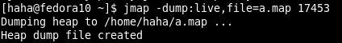
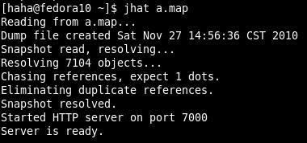
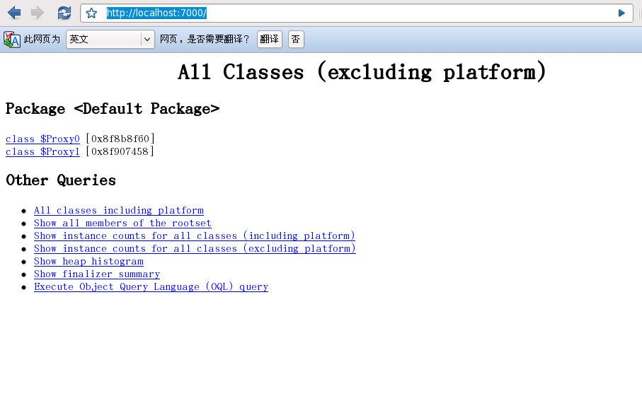
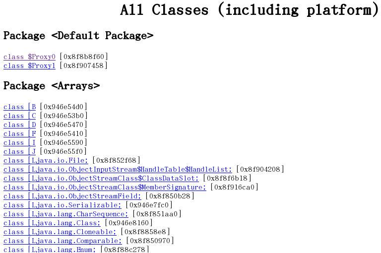
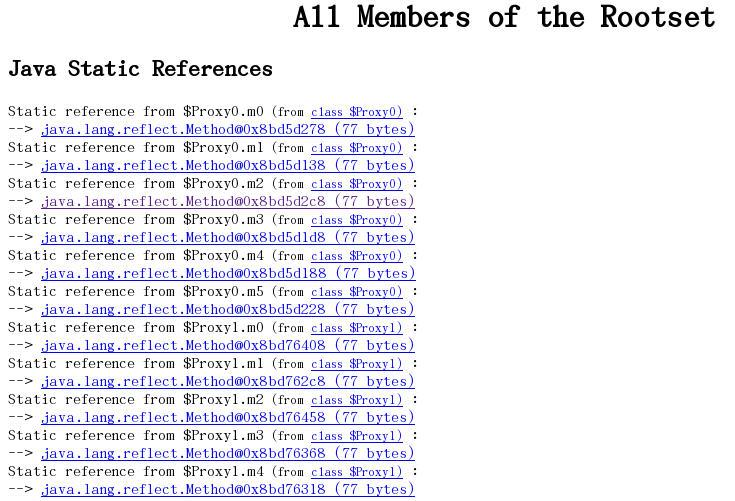
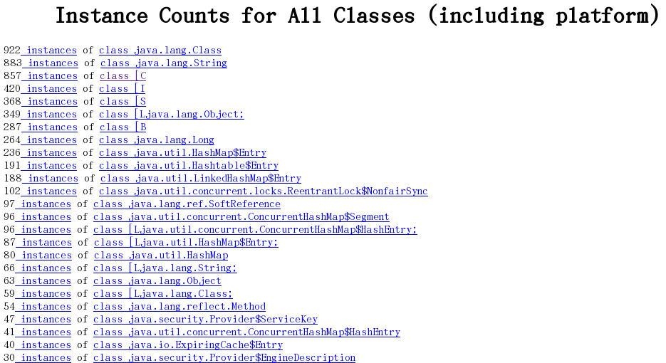
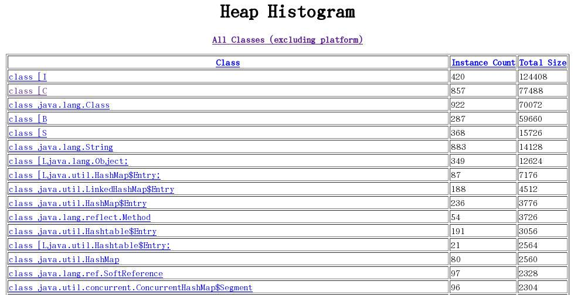
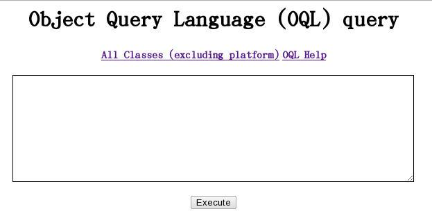

jhat命令 -- Java Head Analyse Tool
用途：是用来分析java堆的命令，可以将堆中的对象以html的形式显示出来，包括对象的数量，大小等等，并支持对象查询语言
第一步：导出堆

第二步：分析堆文件

第三步：查看html

有时你dump出来的堆很大，在启动时会报堆空间不足的错误，可以使用如下参数：
jhat -J-Xmx512m <heap dump file>
对于jhat启动后显示的html页面中功能：
（1）显示出堆中所包含的所有的类

（2）从根集能引用到的对象

（3）显示平台包括的所有类的实例数量

（4）堆实例的分布表

（5）执行对象查询语句

更多关于对象查询语言的信息，见这篇文章：
http://blog.csdn.net/gtuu0123/archive/2010/11/27/6039592.aspx